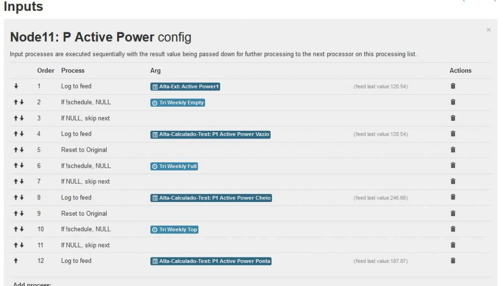

Hi, after finishing my build, it is time to give back to the community and describe the best i can all that i have done.
What you will see here is nothing new of what is already done, if anyone wants to build something similar, adjusted to the specific need of the Portuguese electric company, that defines some crazy periods for low rate tariff, what needs to be done to count €/kWh is right here.
So lets begin:
First of all in order to know how everything works i ordered a emonTx V2 Kit and a RPI RF receiver from the store, assembled it and learned the inner works of it for some days. BUT somehow i managed to convince myself that 3 CT were not enough, and because i have ethernet right next no my fuse box, there was no need for the wireless stuff.
So a custom build was the solution, with:
- Arduino MEGA 1280
- 1x Voltage sensor (ADC 0)
- 8X CT Analog channels (ADC 2,3,5,6,8,9,11,12)
- Burden resistor of the CT at 68 OHM to increase resolution at 0-50AMP (i have máx 25 Amp at home)
- Ethernet with ENC28J60
I already had most of the parts laying around, only had to buy the transformer and the resistors and condensers for the analog input circuit. Even the inputs terminals were here - that's why i ditched the phone connectors - if you do not have a strong reason to do the same please don't do it!
Here it is front side

and back side
 (the high voltage is protected with a big layer of hot glue)
(the high voltage is protected with a big layer of hot glue)
Installed on the fuse box

The input circuit is the same as what is explained in the building blocks for the arduino, however how the whole system is powered is absolutely critical to get good measurements. You can see here (http://openenergymonitor.org/emon/node/10111) some really good advices on how to get proper power. My system is powered through a home alarm system that provides stable 12V. The 12V is stepped down to 7,5V with a DC/DC converter to power the arduino via DC IN. the arduino regulator outputs 5V for the board and feeds another external regulator that provides 3.3V to the ethernet chip. This way was the one that generated the least heat for the whole system and at the same time provided good reference and good measurements.
One problem i have is that CT channels 1, 4 and 7 have higher noise than the rest. They can go up to 20W without a CT attached to the circuit. The others CT channels 2,3, 5, and 6 are really really quiet, they read between -0.2W and 0.2W and average nicely to 0W.
this is the sketch running on the arduino mega, nothing new, reports direcly to emoncms and has some thresholds to get rid of the noisy readings
/*
EmonTx CT123 Voltage NanodeRF example
Part of the openenergymonitor.org project
Licence: GNU GPL V3
Author: Trystan Lea
*/
#include "EmonLib.h"
//#define DEBUG
int node_id = 12;
#define NSENSORS 8
EnergyMonitor emon[NSENSORS]; // Create instances for each CT channel
//---------------------------------------------------------------------
// The PacketBuffer class is used to generate the json string that is send via ethernet - JeeLabs
//---------------------------------------------------------------------
class PacketBuffer : public Print {
public:
PacketBuffer () : fill (0) {}
const char* buffer() { return buf; }
byte length() { return fill; }
void reset()
{
memset(buf,NULL,sizeof(buf));
fill = 0;
}
virtual size_t write (uint8_t ch)
{ if (fill < sizeof buf) buf[fill++] = ch; }
byte fill;
char buf[250];
private:
};
PacketBuffer str;
//---------------------------------------------------------------------
// ETHERNET
//---------------------------------------------------------------------
#include <EtherCard.h>
static byte mymac[] = { 0x74,0x69,0x69,0x2D,0x30,0x31 }; // ethernet interface mac address, must be unique on the LAN
byte Ethernet::buffer[700];
unsigned long timer = 0;
char website[] PROGMEM = "emoncms.org"; // 1) Set this to the domain name of your hosted emoncms - leave blank if posting to IP address
static byte hisip[] = { 192,168,1,10 }; // or if your posting to a static IP server:
boolean use_hisip = false; // change to true if you would like the sketch to use hisip
char basedir[] = ""; // 2) If your emoncms install is in a subdirectory add details here i.e "/emoncms3"
char apikey[] = "xxxxxxxxxxxxxxxxxxxxxxxxxxxxxxxx"; // 3) Set to your account write apikey
int ethernet_error = 0; // Etherent (controller/DHCP) error flag
int ethernet_requests = 0; // count ethernet requests without reply
int dhcp_status = 0;
int dns_status = 0;
//---------------------------------------------------------------------
// SETUP
//---------------------------------------------------------------------
void setup()
{
dhcp_status = 0; dns_status = 0; ethernet_requests = 0; ethernet_error=0;
#ifdef DEBUG
Serial.begin(9600);
Serial.println("OpenEnergyMonitor.org");
#endif
delay(1000);
if (ether.begin(sizeof Ethernet::buffer, mymac, 53) == 0) {
#ifdef DEBUG
Serial.println( "Failed to access Ethernet controller");
#endif
ethernet_error = 1;
}
delay(1000);
// Ain 1,4,7 e provavelmente 10 induzem ruido
emon[0].current(2, 28.234); // Calibration factor = CT ratio / burden resistance = 2000 / 68 Ohms = 29.412
emon[0].voltage(0, 206.3, 1.7); // (ADC input, calibration, phase_shift)
emon[1].current(3, 28.136); // Calibration factor = CT ratio / burden resistance = 2000 / 68 Ohms = 29.412
emon[1].voltage(0, 206.3, 1.7); // (ADC input, calibration, phase_shift)
emon[2].current(5, 28.577); // Calibration factor = CT ratio / burden resistance = 2000 / 68 Ohms = 29.412
emon[2].voltage(0, 206.3, 1.7); // (ADC input, calibration, phase_shift)
emon[3].current(6, 28.346); // Calibration factor = CT ratio / burden resistance = 2000 / 68 Ohms = 29.412
emon[3].voltage(0, 206.3, 1.7); // (ADC input, calibration, phase_shift)
emon[4].current(8, 28.143); // Calibration factor = CT ratio / burden resistance = 2000 / 68 Ohms = 29.412
emon[4].voltage(0, 206.3, 1.7); // (ADC input, calibration, phase_shift)
emon[5].current(9, 28.507); // Calibration factor = CT ratio / burden resistance = 2000 / 68 Ohms = 29.412
emon[5].voltage(0, 206.3, 1.7); // (ADC input, calibration, phase_shift)
emon[6].current(11, 28.320); // Calibration factor = CT ratio / burden resistance = 2000 / 68 Ohms = 29.412
emon[6].voltage(0, 206.3, 1.7); // (ADC input, calibration, phase_shift)
emon[7].current(12, 28.330); // Calibration factor = CT ratio / burden resistance = 2000 / 68 Ohms = 29.412
emon[7].voltage(0, 206.3, 1.7); // (ADC input, calibration, phase_shift)
}
//---------------------------------------------------------------------
// LOOP
//---------------------------------------------------------------------
void loop()
{
dhcp_dns(); // handle dhcp and dns setup - see dhcp_dns tab
ether.packetLoop(ether.packetReceive());
if ((millis()-timer)>10000) { // 10000 = a post every 10 seconds.
timer = millis();
for (int i=0; i<NSENSORS; i++) { // perform measurements
emon[i].calcVI(20,2000);
}
// Available properties: ct1.realPower, ct1.apparentPower, ct1.powerFactor, ct1.Irms and ct1.Vrms
str.reset();
str.print(basedir); str.print("/input/post.json?"); str.print("apikey="); str.print(apikey); str.print("&node="); str.print(node_id);
str.print("&json={V:"); str.print(emon[0].Vrms); str.print(",");
str.print("P1:"); abs(emon[0].realPower) < 10 ? str.print("0") : str.print(emon[0].realPower); str.print(",");
str.print("I1:"); str.print(emon[0].Irms); str.print(",");
str.print("pF1:"); str.print(emon[0].powerFactor); str.print(",");
str.print("P2:"); abs(emon[1].realPower) < 0.9 ? str.print("0") : str.print(emon[1].realPower); str.print(",");
str.print("P3:"); abs(emon[2].realPower) < 0.9 ? str.print("0") : str.print(emon[2].realPower); str.print(",");
str.print("P4:"); abs(emon[3].realPower) < 20 ? str.print("0") : str.print(emon[3].realPower); str.print(",");
str.print("P5:"); abs(emon[4].realPower) < 0.9 ? str.print("0") : str.print(emon[4].realPower); str.print(",");
str.print("P6:"); abs(emon[5].realPower) < 0.9 ? str.print("0") : str.print(emon[5].realPower); str.print(",");
str.print("P7:"); abs(emon[6].realPower) < 20 ? str.print("0") : str.print(emon[6].realPower); str.print(",");
str.print("P8:"); abs(emon[7].realPower) < 0.9 ? str.print("0") : str.print(emon[7].realPower);
str.print("}"); str.print("\0"); // End of json string
#ifdef DEBUG
Serial.print("Data sent: "); Serial.println(str.buf);
#endif
ether.browseUrl(PSTR("") ,str.buf, website, 0); // Send data to the server
} //end of main 10 second cycle
} // end of main loop
So everything smooth, but again i was not happy with this, had to get cost per kWh, with the real rates depending on the time of the day so read the forum and got the needed help, use addons on the emoncms or use crontab. I still did't setup properly a home server with emoncms (working on that) so crontab was my only choice. My NAS is awake 24x7, so it was easy to make it work. Too bad i'm not able to install emoncms on it.
The Portuguese Electricity company is really creative in setting the offpeak periods, on my case its everyday from 00:00 to 07:00, but on Saturday it gets really twisted. It bounces back and forth between offpeak and onpeak and has different periods if we are in the summer or if we are in the winter.
this is a possible solution that is working for a month now (removed absolute paths to make it easier to read):
New feed with 3 values:
- euro - tariff value in €/kWh - vazio - if offpeak: 1 otherwise 0 - cheio - if offpeak: 0 otherwise 1
My crontab:
# Bi-horario semana: 0 0 * * 1-5 root tarifa.sh vazio 0 7 * * 1-5 root tarifa.sh cheio # Bi-horario domingo: 0 0 * * 0 root tarifa.sh vazio # Bi-horario sabado: 0 0 * * 6 root tarifa.sh vazio 0 9 * * 6 root tarifa_verao.sh cheio 30 9 * * 6 root tarifa_inverno.sh cheio 0 13 * * 6 root tarifa_inverno.sh vazio 0 14 * * 6 root tarifa_verao.sh vazio 30 18 * * 6 root tarifa_inverno.sh cheio 0 20 * * 6 root tarifa_verao.sh cheio 0 22 * * 6 root tarifa.sh vazio
the argument in each call is the €/kWh, so every time the tarrif changes i only have to update these files:
# more vazio 0.120294 # more cheio 0.224213
the script itself is very simple and has two variants: one that runs at summer time and one that runs at winter time:
# more tarifa.sh
#!/bin/sh
set -e # exit if any error
i=$(<$1) # load file
# Determine the tariff period from the ending of the argument
cheio=0; vazio=0;
if [[ "$1" == *cheio ]]; then cheio=1; else vazio=1; fi;
curl -s "http://emoncms.org/input/post.json?json={euro:$i,cheio:$cheio,vazio:$vazio}&apikey=XXXXXXXXXXXXX&node=1"
# more tarifa_inverno.sh
#!/bin/sh
set -e # exit if any error
i=$(<$1) # load file
# Determine the tariff period from the ending of the argument
cheio=0; vazio=0;
if [[ "$1" == *cheio ]]; then cheio=1; else vazio=1; fi;
if date +%Z | grep BST &> /dev/null; then # summer time
:
else # winter time
curl -s "http://emoncms.org/input/post.json?json={euro:$i,cheio:$cheio,vazio:$vazio}&apikey=XXXXXXXXXXXX&node=1"
fi
# more tarifa_verao.sh
#!/bin/sh
set -e # exit if any error
i=$(<$1) # load file
# Determine the tariff period from the ending of the argument
cheio=0; vazio=0;
if [[ "$1" == *cheio ]]; then cheio=1; else vazio=1; fi;
if date +%Z | grep BST &> /dev/null; then # summer time
curl -s "http://emoncms.org/input/post.json?json={euro:$i,cheio:$cheio,vazio:$vazio}&apikey=XXXXXXXXXXXXXX&node=1"
fi
on emoncoms this is the input feed for the onpeak/offpeak periods:

And this is the general input configuration for the CT's:

With all this it was easy to generate the following graphs:
Brief to see in the smartphone

Detail to debug

Offpeak(Green) and Onpeak(Orange) usage - got this snapshot at midnight, all the counters were set to 0. I can assure you it works though!

and several usage statisticas and costs


The values don't add up nicely in the last picture because i made mistakes at the beginning. It would be nice if we could reset all the feeds to start over.
Well that's it, hope you enjoy and if you are not sure about building your own i hope you find here some arguments to go for it!
Thanks!
Re: The best build that is no better than the others - It Works!
Great build.
Thank you for sharing.
Re: The best build that is no better than the others - It Works!
Thanks.
Looking back to the whole thing i would have had extra care designing the analog stage fot the CT sensors, having 3 out of 8 with some noise still bothers me. However after spending too much time trying to solve that, i just assumed the error and continued.
My main objective with this project is not to monitor energy alone, it is to automate my home-made EVSE to charge my Nissan Leaf. With this system it is easy to pull the whole house consumption from the API, do the math and instruct the car to use the remaining available power.
What you get from having a openenergy system is much more than what you see... and that's truly amazing! Thanks!
Re: The best build that is no better than the others - It Works!
Hi
I think noise of "3 out of 8" from base ADC arduino when use analogRead() on different PINs ADC of Arduino
You can see topic:
https://forums.adafruit.com/viewtopic.php?f=25&t=11597&sid=33426cbf21c75563c52322afd5d1e0f4
I think this noise is inevitable
(Sorry for my English)
Re: The best build that is no better than the others - It Works!
If the noise is only present on some channels, then it might well be an issue with the layout. It might also be the CT itself picking up a signal from adjacent cables. Do all the analogue inputs have a good solid GND connection back to a single common point? Is it possible that some digital signals are returning along the same piece of copper? Is there a filter between the digital and analogue power supplies on your particular Arduino? (Some have one, some do not.) All these things (and more!) can affect the noise pickup. There is a lot of good information on how to minimise noise pickup on the Atmel website.
Re: The best build that is no better than the others - It Works!
One simple test to help isolate the noise is to swap a noisy CT with a quiet CT, just at the screw terminals where they terminate onto your monitor (don't physically move the CTs). If the noise stays with the CT you'll know to investigate it over near the breakers, or in the cabling. If the noise stays with the screw terminal you'll know to investigate on your board.
I too monitor individual circuits, and I definitely get some minor cross-talk between my CTs (or possibly the CT cables). I've confirmed it arrives at my screw terminals, so I at least know not to go looking for the source in my monitor. One day I might man up and start moving CTs around, but I prefer not to be messing around back there if I can avoid it.
I've added the ability to capture the 24-bit raw waveform data out of my monitor. Effectively each of my channels is also a 24-bit 4KHz scope. Attached is a picture of my Hot Plates circuit (time and frequency domains). In both cases the Hot Plates are off, but in the second case I've switched a 2.4KW load on, on a completely different circuit. The RMS ghost current on the Hot Plates circuit jumps from about 4.8mA to 19.5mA and you can see it's nicely sync'd with V, enough to make it break out of its anti-creep threshold and declare the Hot Plates are using 4.8W! Fortunately, the hot plates never use any low currents like that, so I have an additional software anti-creep threshold on that circuit of 10W.
Re: The best build that is no better than the others - It Works!
Hi thanks for your inputs!
I resoldered a few times all the tracks, with added wires to get solid connections, and spend some time trying to isolate each channel the best i could. I'm not sure now if there were more noisy channels, but could never fix those 3. The noise is present with no CT attached. It appears as a positive power that can go up to 13-14Watt on one of them.
To troubleshoot the arduino board i changed the analog pins for the channels, the original ones were 1 to 8. and the noise was on 1, 4 and 7, so i bypassed those, but because it was no easy task i had to remake all the connections to the analog inputs. If you see on my sketch i'm using analog 2,3,5,6,8,9,11,12.
The noise shifted to the new analog inputs acordingly, where before Analog input 2 was clean, with the second analog circuit, it became noisier when driven by the analog circuit number 1.
So it's definitely on the prototype board layout.
I also tried to take care of good grounding if you check the back side picture the black wires are ground and have a reinforced track that surrounds all the channels. The noisier are not in a particular physical area, and are adjacent to clean channels so after some more soldering and reconditioning those nasty channels without any improvement i just gave up.
But i'm happy, 5 out of 8 are just perfect :-) I can sense my washer machine stand-by at 2Watt, if i pull the circuit breaker it goes down to zero! Ain't that amazing?
Regarding the constructive interference between channels, this time with the CT's connected and in operation, i also observed that phenomenon while testing, i read here on the forum that the CT cables should be shielded to ground, you guys recommend doing that? on my graphs i have not observed that since setting up the thresholds in the sketch.
BR
Re: The best build that is no better than the others - It Works!
That all sounds like pretty thorough noise hunting. Not sure what to suggest after that, unless you can borrow a scope from someone? If you can, I'd power up the proto board (with the Arduino and CTs removed), set the scope probe to AC coupling and just a few mV per division and start probing around. I guess the mid-rails would be a good place to start... see if they're noisier on the noisy channels than on the quiet channels. You might be able to do something similar with a multimeter.... set your multimeter to AC volts and then measure each of the mid-rails, but a scope would be way better suited to the task.
[EDIT] Actually, it could be worth checking the DC voltage of each of the mid-rails as well. The noisy ones might be sitting right on an AtoD step, while the quiet ones might be safely in the middle of a step. Robert has a theory that just the right amount of noise there can be helpful, but I'm not convinced. There's more about that here: http://openenergymonitor.org/emon/http%3A/%252Fopenenergymonitor.org/emon/sites/default/files/Arduino%20AC%20current%20input%20A.png
And the other thing I forgot to mention, is that your Arduino itself makes a half decent rudimentary scope. I posted a sketch in that "noise in Arduino builds" thread that you referenced above that you can use. Try running that on your noisy channel with no CT connected and then graph the data it spits out. It just gets raw readings, no filtering, no nothing... if it's only the LSB that's flipping backwards and forwards then it's probably as good as it gets, if it's anything else its shape may give some clues. That it's showing up as real power suggests it has at least some 50Hz component.
Re: The best build that is no better than the others - It Works!
Hi dBC, unfortunately i don't have a scope, and the readings i made with my multimeter revealed nothing wrong at it's own limited level of precision.
But your sketch to pull raw data directly from the arduino seems at reach and it's definitely a good idea to do that, i'll try when i have the chance.
tks!
Re: The best build that is no better than the others - It Works!
When you are set up to view it, assuming there is some 50Hz signal in there, try it with and without power to your transformer to see if that's the source. If it were coming in through your Arduino DC supply, I'd expect it to be more consistent across all your channels.
Re: The best build that is no better than the others - It Works!
"If it were coming in through your Arduino DC supply..."
Your full scale power is approx 12 kW, I think, so 20 W is about 0.16%. That is well within the range where shifting the bias point inside one step of the ADC can give big changes in the readings, so if it is easy, you could try replacing one of the bias resistors with another of the same value. The different value of resistance, still inside the tolerance band, might move the bias point enough to make a difference.
One day, I will sit down with a spreadsheet and try to understand exactly how very small signals behave when the bias moves across the boundary of an ADC step - both for rms current and average power.
Re: The best build that is no better than the others - It Works!
That sketch referenced above will tell you your peak-to-peak noise in A/D units. If it's above 1 that's when you can go researching the source (powering off the transformer etc). If it is 1 then that's normal, and as Robert says, you can move the quiescent state relative to the A/D steps by re-throwing the resistor dice.
Re: The best build that is no better than the others - It Works!
cab123
You can use the new scheduler module from XT branch instead of crontab to get the same multi rate accountings.
For Portugal use this schedules :
Empty: Winter|Mon-Fri|00:00-06:59, Winter|Sat|00:00-09:29,13:00-18:29,22:00-23:59, Winter|Sun|00:00-23:59 , Summer|Mon-Fri|00:00-06:59, Summer|Sat|00:00-08:59,14:00-19:59,22:00-23:59, Summer|Sun|00:00-23:59
Full: Winter|Mon-Fri|07:00-23:59, Winter|Sat|09:30-12:59,18:30-21:59 , Summer|Mon-Fri|07:00-23:59, Summer|Sat|09:00-13:59,20:00-21:59
Config input as follow (this is example for tri-rate schedule):

Give it a try!
Re: The best build that is no better than the others - It Works!
Hi chaveiro, still posting to emocms.org, to install modules i have to setup a local server, right?
dBC/Robert, i really want to troubleshoot the noisy channels, but i'm at a point where the data building up on the graphs start to get really interesting, so i will delay this until the next "maintenance window", where i will move data to a new local server. There is a big chance of failure so it's a good time to troubleshoot :-)